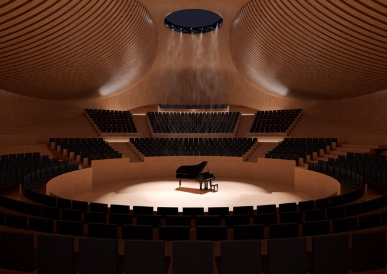
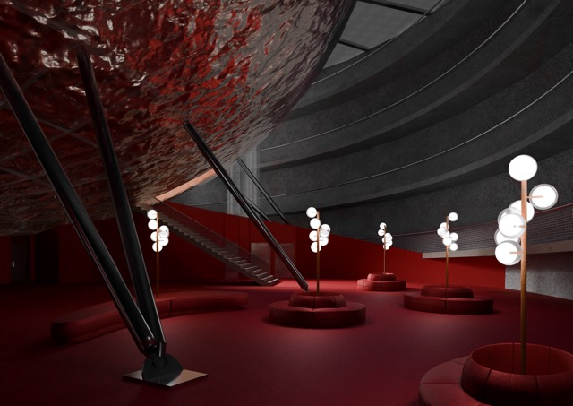
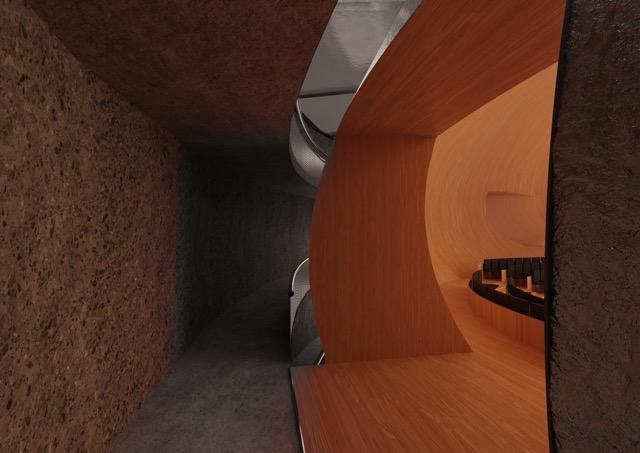
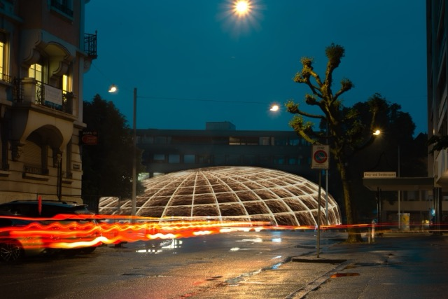

0053
_the NOTE
LOCATION
Dornacherplatz is located at the edge of Solothurn’s old town,
directly beside the Aare River and close to the main train station. For many years, this central square was used as a…
surface parking lot. To free up the space above ground, parking was relocated to a new underground garage situated 16 meters below the surface.
CONSTRUCTION
The construction of this garage followed several steps: first, a thick slurry wall was built around the excavation site to absorb all horizontal forces from the surrounding soil and water,
creating a dry, watertight
“bucket” in which construction
could proceed from the bottom up.
that means that the internal structure (the ramp) is an independended from outside
NEEDS
Today, Dornacherplatz remains largely unused and covered with asphalt.
Solothurn sees itself as a city of culture and actively supports cultural initiatives.
While there is sufficient affordable housing
with more developing project being build right now,
the Solothurn Symphony Orchestra lacks its own rehearsal and concert space within the city.
FEASIBILITY
after a deep dive in to acoustical research
i ve decided to compare the size of varies concert halls - it was clear that dimensions of my parking lot are enough to fit in a concert hall
PROJECT
The project idea is converting the existing underground parking into a concert hall.
The steps would be first to return the site to its “bucket” state,
removing all internal structures and ramps—so that only the sealed, empty underground volume remains.
Once the space is cleared, a new concert hall can be constructed from the bottom up within this watertight shell.
The concert hall is designed as a free-standing structure, independent from the outer retaining walls, to minimize vibration and ensure sound isolation.
The interior features a shifted vineyard-style seating arrangement to bring the audience closer to the performers, while acoustic extensions helps distribute sound evenly throughout the space.
The negative space
created between the compact ellipse of the concert hall
and the outer retaining wall forms a series of unique spatial sequences.
The concert hall, named “The Note” for its elliptical form set diagonally within the site, is divided into two nearly equal zones—one for the audience and one for the musicians.
A helical ramp spirals down through both zones, allowing visitors and musicians to experience the full journey through the building.
Throughout this descent, the audience and musicians remain separated, with their only visual meeting point
at the stage—creating a sense of anticipation and a dynamic interplay, almost like a dance, until they finally come together for the performance
in the concerthall “the note”.
and lets experience it together.
ty




Next project →